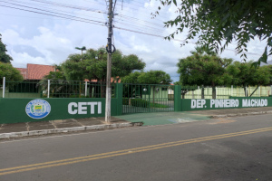

O colegio está localizado no Município de Cocal-Pi na Rua Reinaldo Marquês proximo a delegacia.
Dentro das normas do Novo Ensino Médio (NEM) a escola oferece ao estudante as mais novas matérias aceitas pelo governo federal que permitirão o jovem a optar por uma formação técnica e profissionalizante.